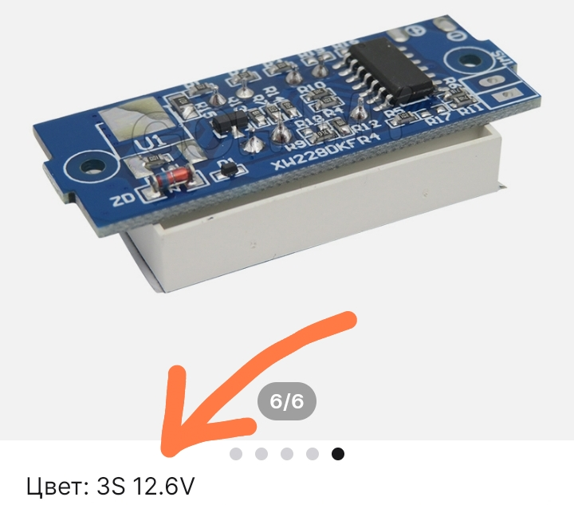

рассчёт сопротивлений

Как рассчитать сопротивление этой цепи?
Ответ:
Формула расчёта последовательных сопротивлений:
R = R1 + R2;
Для параллельных:
1 / R = 1 /R1 + 1 / R2
Сопротивление последовательных резисторов
R1 и R4 R = R1 + R4,
сопротивление R2 и R5 – R = R2 + R5.
Теперь мы считаем параллельное соединение трёх сопротивлений:
R1 + R4, R3 и R2 + R5.
Соответственно,
1 / R = 1 / (R1 + R4) + 1 / R3 + 1 / (R2 + R5)
После умножения на общий знаменатель получаем:
1 / R = R3 (R2 + R5) + R1 + R4 + R3 (R1 + R4) = R2 R3 + R3 R5 + R1 + R4 + R1 R3 + R3 R4
После инвертирования уравнения получаем готовую формулу:
R = 1 / (R2 R3 + R3 R5 + R1 + R4 + R1 R3 + R3 R4)
PowerBank на 12 и 5 Вольт
страница проекта

Компоненты:
- Литиевые аккумуляторы 18650 (можно не высокотоковые) – 3 или 6 шт.
- Плата защиты BMS на 12,6 вольт (3S) – 1 шт.
- Индикатор заряда (любой на сборку 3S) – 1 шт.
- Переключатель – 1 шт.
- Тактовая кнопка – 1 шт.
- Гнездо DC – 1 шт.
- Преобразователь 12 – 5 Вольт, в моём случае это плата от автомобильного зарядника телефона.
Схема:
3-х аккумов вполне хватит. Но можно поставить 6 (и даже 9!) на одну плату BMS. Для этого на место каждого
аккума ставится две параллельно соединённые банки. При 6 банках – ёмкость увеличивается вдвое, при 9 –
втрое.
Про индикатор заряда
Индикаторы выпускаются на разное напряжение. В данном случае он должен быть рассчитан на сборку 3S и
напряжение 13,6 В:

Так же в продаже есть индикаторы, сзади которых есть перемычки, с помощью которых можно выбирать нужное
напряжение:
Перемычку надо паять ту, возле которой написано “3S”.
Корпус
Один из вариантов корпуса – распределительная коробка.
Плату BMS удобно поставить на сборку аккумуляторов. Конечно, через изолятор)
Как заряжать
Если аккумуляторы, допустим, на 2600 миллиампер-часов, то заряжать надо силой тока, не превышающей 1300.
То есть в два раза меньше!
Как вариант – использовать лабораторный блок питания (ЛБП) или зарядник на 12 В и 1 А.
Заряжать через гнездо DC, с него же и питать 12-вольтовые устройства.
Мини катушка Тесла
страница проекта

Компоненты (DIP):
- Полевой транзистор IRFZ740 – 1 шт.
- Электролитический конденсатор 4,7 μF 400 V – 1 шт.
- Резистор 56 Ω – 1 шт.
- Потенциометр 1 кΩ – 1 шт.
Схема:
Катушки:
Первичная обмотка: 1 виток медного провода сечением 1,5 мм
Вторичная обмотка: 600 или 800 витков медного лакированного провода сечением 0,15 или 0,1
соответственно. Диаметр сердечника 250 мм (можно намотать на вопроводную трубу 2,5 см). Вторичку нужно
мотать в один слой виток к витку!
На верхнем конце вторичной обмотки нужен металлический шпиль (иголка, гвоздик).
Примечания
Катушка может не работать при первом подключении, для этого нужно перевернуть первичную обмотку
(поменять местами выводы).
Транзистору нужен радиатор!!! Лучше через изолирующую пластинку (обычно слюдяную), т.к. корпус
транзистора соединён с выводом Drain (стоком), т.е. плюсом питания.
Характеристики
- Uпит. – от 12 до 30 В
- Iпотр. (Uпит. = 12 В) – около 2 А